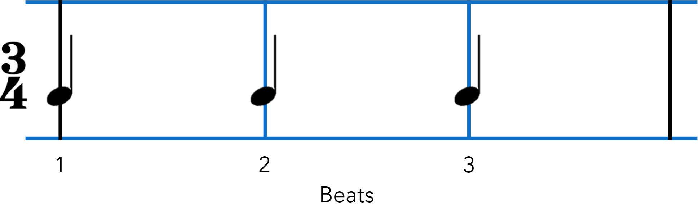
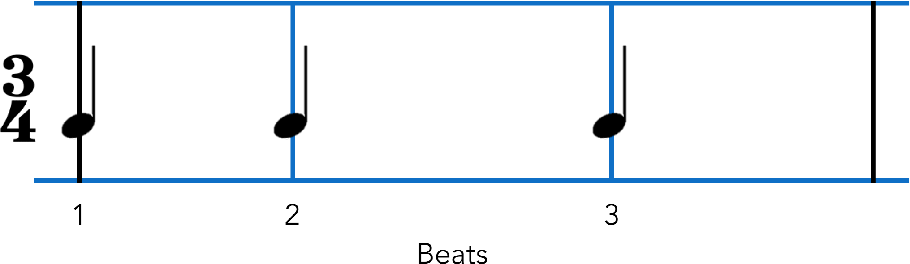

As presented at ISMIR 2023
Micro-timing is an essential part of human music-making, yet it is absent from most computer music systems. Partly to address this gap, we present a novel system for generating music with style-specific micro-timing within the Sonic Pi live coding language. We use a probabilistic approach to control the exact timing according to patterns discovered in new analyses of existing micro-timing data (jembe drumming and Viennese waltz). This implementation also required the introduction of musical metre into Sonic Pi. The new metre and micro-timing systems are inherently flexible, and thus open to a wide range of creative possibilities including (but not limited to): creating new micro-timing profiles for additional styles; expanded definitions of metre; and the free mixing of one micro-timing style with the musical content of another. The code is freely available as a Sonic Pi plug-in and released open source on GitHub.
This project uses two different styles of music as contrasting case studies for evaluation: jembe (or “djembe”) drum music from Mali and Viennese waltz music. These two styles both have robust, well-known micro-timing characteristics.
The Viennese waltz is a style of fast waltz notated in 3/4 (but often counted in 1), originally intended for ballroom dancing, and now often performed in concerts by Western classical orchestras. Distinctive microtiming can be observed on (at least) the beat level, where it has a characteristic short-long-medium pattern.
require
'sonicpi/metre'
use_metre
'3/4'
eval_file
"blue_danube.rb"

require
'sonicpi/metre'
use_metre
'3/4',
:viennese_waltz
eval_file
"blue_danube.rb"
